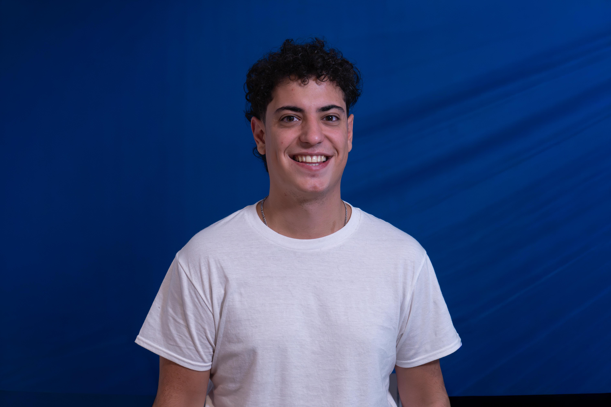
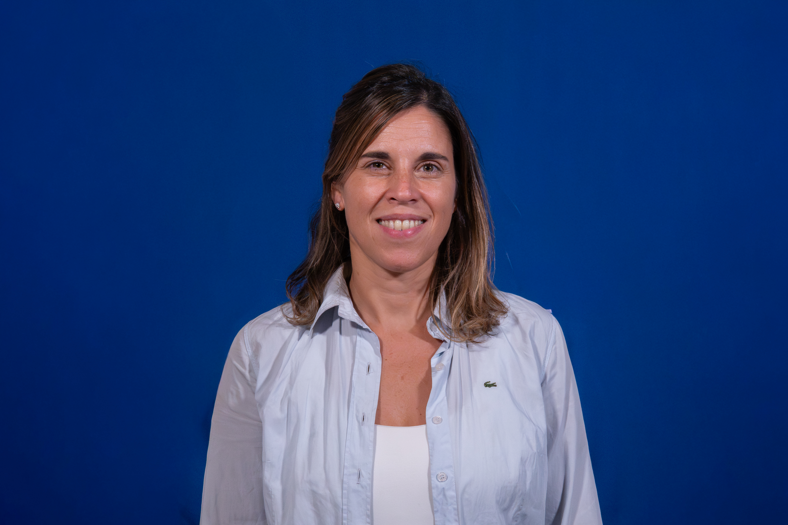

Presentación institucional
Un proyecto de largo plazo para el sur
No es un instituto electoral. Es una construcción intelectual y política sostenida en el tiempo.
El Instituto Político del Sur (IPSUR) nace con el firme compromiso de vincular la formación profesional con la acción política. Nuestro propósito es producir conocimiento riguroso que no solo enriquezca el debate público, sino que funcione como sustento técnico y teórico para el diseño de políticas públicas con verdadero impacto en nuestra región.
Somos un espacio independiente, plural y convocante. Nuestra identidad institucional nos permite promover un análisis objetivo de la realidad, aportando una mirada técnica que complemente y trascienda las dinámicas partidarias tradicionales. La reivindicación del Sur refleja una doble convicción: el impulso de la integración regional desde el sur de la provincia, y nuestro compromiso con el pensamiento situado del Sur Global.
Buscamos ser un puente entre la sociedad civil, el sector académico y el diseño de estrategias de desarrollo. A través de la seriedad académica y el rigor investigativo, invitamos a profesionales, técnicos y ciudadanos a construir juntos la agenda de los temas esenciales para transformar nuestra realidad.
-
Dirección
Conduce políticamente el instituto, garantizando coherencia entre las áreas y orientando el trabajo hacia un objetivo común.
-
Consejo Directivo
Compuesto por perfiles técnico-políticos que representan a cada una de las cuatro áreas de trabajo. Participa en la toma de decisiones.
-
Coordinadores Institucionales
Responsables de mantener la estrategia programática y obrar como nexo institucional con actores estratégicos de la región.
Nuestro Propósito
Objetivos Generales
-
Formación Política
Proponer instancias de formación política de calidad para la gestión estatal y la gobernanza local.
-
Investigación y Desarrollo
Aportar investigación, desarrollo y fundamentación teórica para potenciales políticas públicas de impacto real en Bahía Blanca.
-
Conversación Pública
Intervenir la conversación pública bahiense con contenido político que responda a las demandas de la ciudadanía y la proyección de la ciudad.
Las 4 líneas de acción
El corazón del Instituto
-
01 · Investigar
Generar propuestas originales sobre temas gravitantes de Bahía Blanca y la región como insumo político.
-
02 · Difundir
Construir la voz pública de IPSUR, instalar temas, crear agenda y abrir discusiones llegando a medios y ciudadanía.
-
03 · Formar
Formar cuadros políticos con identidad, criterio y herramientas en una escuela de gestión con valores propios.
-
04 · Militar
Traducir lo que se produce en intervención territorial, articulando el contenido con la militancia general del espacio.
Organigrama
Equipo de Trabajo
Las personas encargadas de llevar adelante la visión y cada área del Instituto Político del Sur.

Agustín Hernandorena

Martín Tellería

Romina Pires

Santiago De los Santos

Aylén Bitti Díaz

Joaquín Minig

Luna Pastuszuk

Martina Ortegui